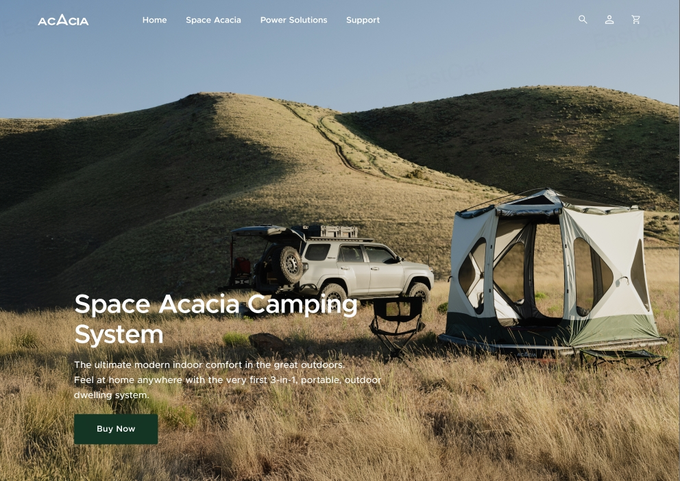
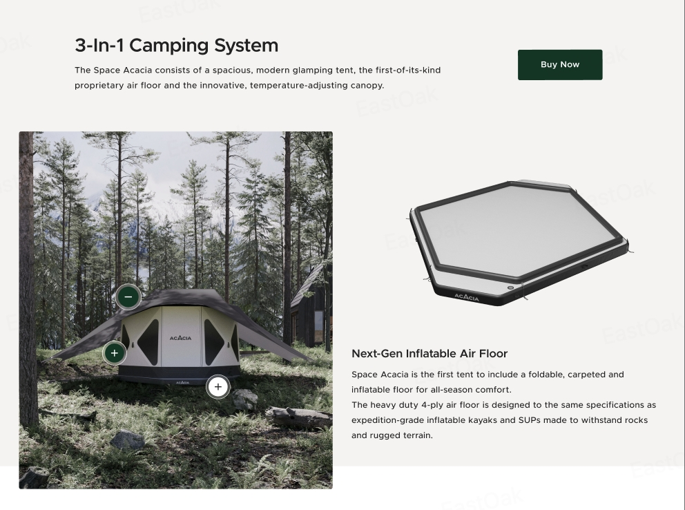

001 / Shopify / Brand Commerce
Outdoor commerce, staged like a product launch.
A commercial website system for Acacia Outdoor: campaign-grade visuals, product education, Shopify conversion, and a premium outdoor brand world.

Visual System
Premium product clarity with an outdoor campaign atmosphere.
The page treats the tent as a hero object, then builds a shopping path around desire, utility, proof, and action. The visual system is clean enough for commerce, but cinematic enough to feel like a launch.
Commercial Logic
From first impression to confident purchase.
Large campaign imagery gives the brand an immediate premium outdoor mood.
Product modules translate comfort, setup, weatherproofing, and durability into shopper language.
Homepage, product family, variant, and add-on moments help people choose without friction.
Trust signals, CTAs, and Shopify structure turn the brand story into a buying path.
Product Education
The product page behaves like a guided sales conversation.
Instead of flattening the tent into specs, the layout gives shoppers a sequence: what it is, why the system matters, how the pieces work together, and why it is worth buying now.

Case Study Notes
What this project shows in the portfolio.
Can shape a product site so it feels premium, clear, and conversion-aware.
Can turn campaign imagery, product education, and shopper logic into one experience.
Understands Shopify storefront needs, responsive modules, and real launch constraints.